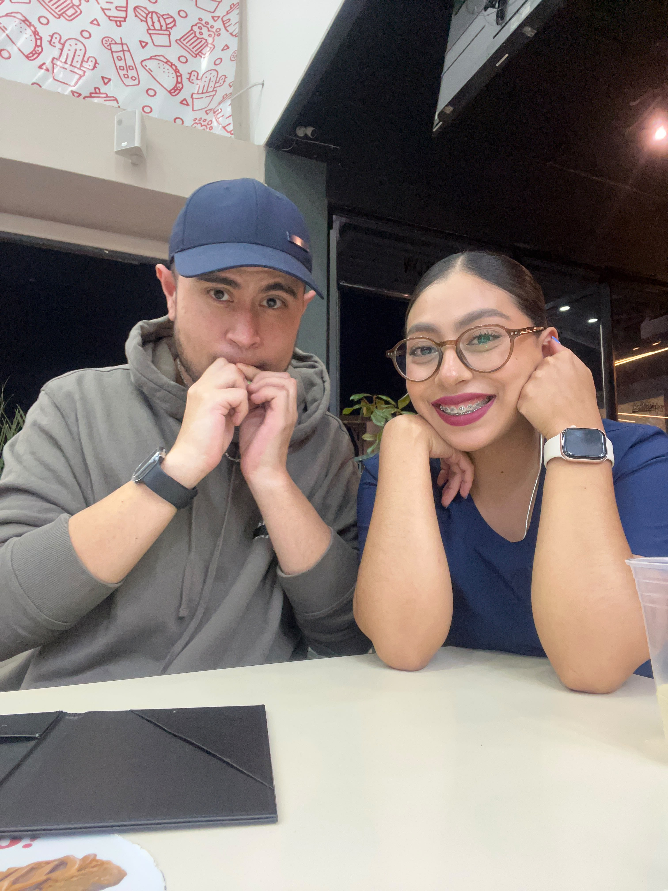
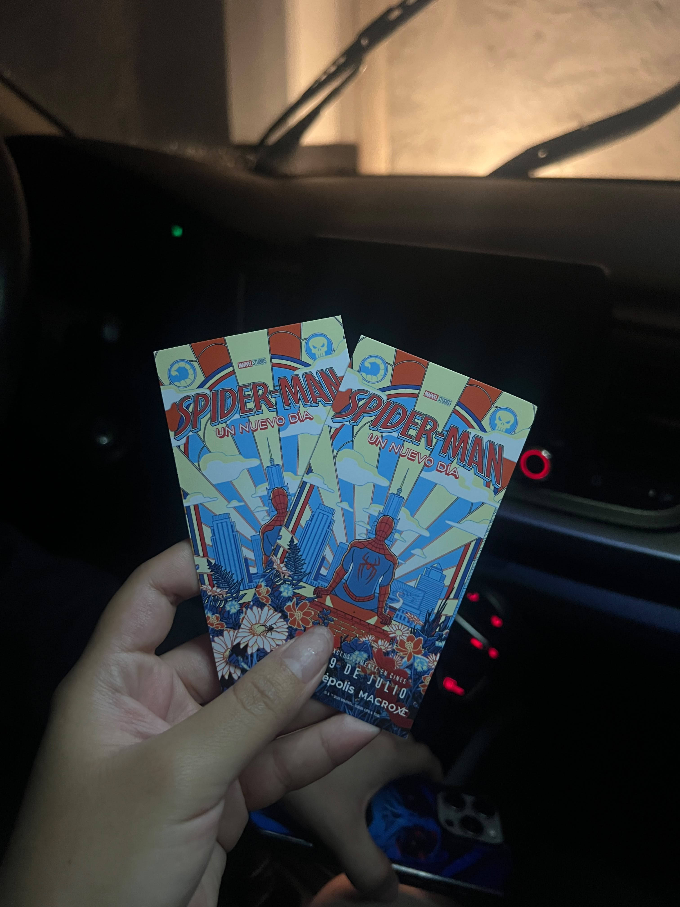
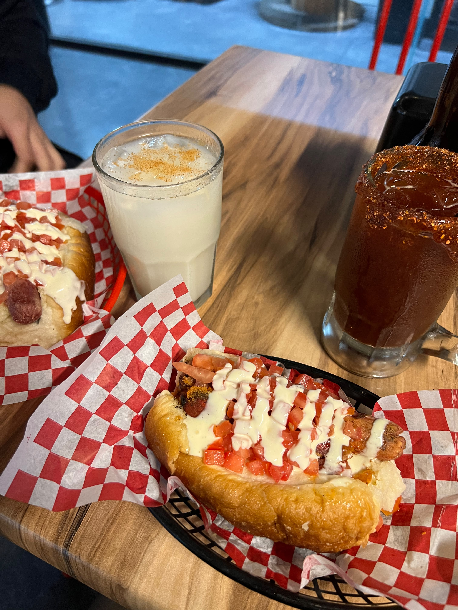
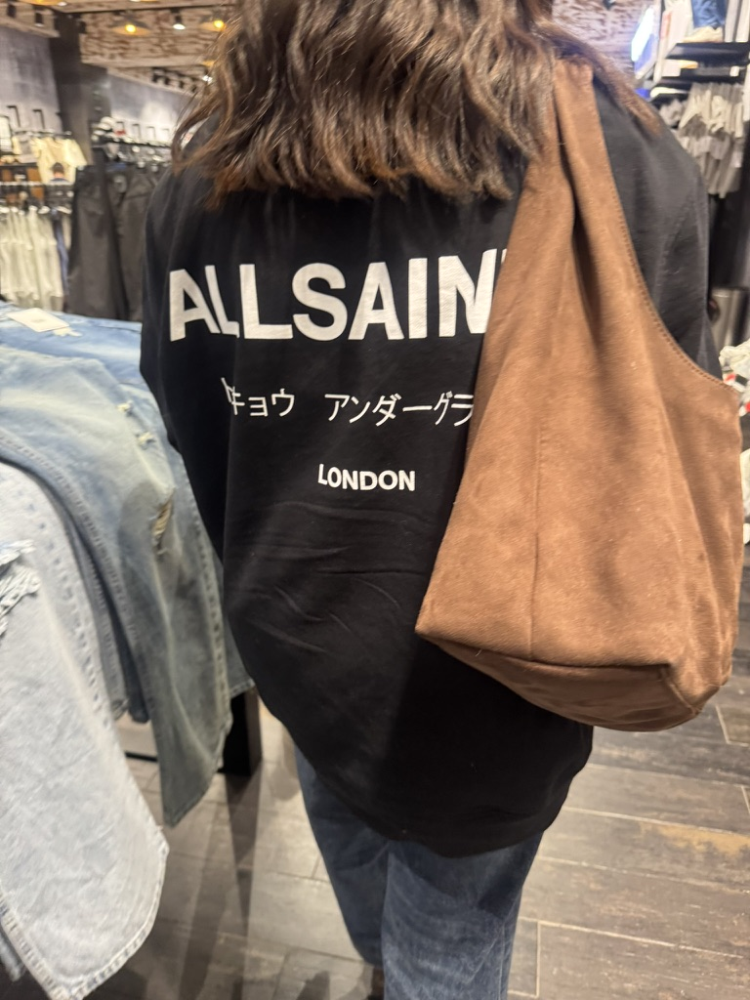
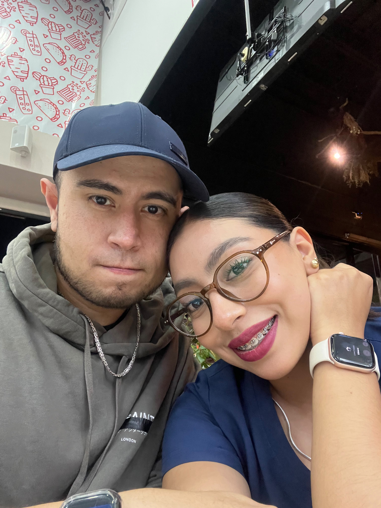

Para alguien especial
Todo comenzó
dentro del agua.
Aunque ahora, curiosamente, nadar es de lo que menos hablamos.
Esta es la historia de cómo una rutina de natación, un mensaje inesperado y muchas conversaciones comenzaron a convertirse en algo increíble.
01 · LA HISTORIA
Una rutina de natación cambió el rumbo de mis días.
Un día subiste a Facebook la rutina que habías nadado. Habías hecho una cantidad impresionante de metros de pecho y no pude evitar prestarte atención.
Me sorprendió lo mucho que habías nadado. Aunque, siendo completamente honesto, también me pareció imposible no notar lo linda que eras.
02 · EL PRIMER MENSAJE
Así que decidí escribirte.
Comenzamos hablando de albercas, rutinas, estilos y metros nadados.
Pero cada conversación se fue haciendo más personal. Poco a poco dejamos de hablar únicamente de natación y comenzamos a hablar de nosotros.
Los dos seguimos amando nadar, aunque entrenemos en albercas diferentes. Tal vez por eso me gusta pensar que el agua nos presentó, pero que todo lo demás hizo que nos quedáramos.
03 · EL PRIMER DÍA
Cuando te conocí, el tiempo simplemente desapareció.
Comenzamos a hablar de todo: de nuestras vidas, de lo que somos y de esas cosas que normalmente tardan más tiempo en contarse.
Sin darnos cuenta llegó la noche y yo todavía no quería que entraras a tu casa.
Me gustaba cómo me mirabas, cómo sonreías y cómo te reías de mis tonterías. Fue entonces cuando comencé a sentir esa química contigo.
04 · LOS PEQUEÑOS MOMENTOS
Hay momentos pequeños que se quedan para siempre.
Como cuando tomé tu mano durante nuestra primera salida y sentí por primera vez su calidez.
O cuando salimos de Galerías, te sujetaste de mi brazo y tenerte tan cerca consiguió hacerme sonrojar.
Son instantes que podrían parecer sencillos, pero que para mí comenzaron a significar muchísimo.
05 · LA ODISEA
Hasta mi sudadera se veía mejor contigo.
Recuerdo cuando fuimos al cine a ver La Odisea y usaste mi sudadera.
Quizá para alguien más habría sido un detalle pequeño, pero verte con ella me hizo sentir algo demasiado bonito.
Porque contigo he comenzado a descubrir que la felicidad también puede esconderse en los momentos más sencillos.
06 · LO QUE ADMIRO
Mientras más te conozco, más razones encuentro para admirarte.
Admiro tu resiliencia y la forma en la que sigues avanzando, incluso cuando las cosas no han sido sencillas.
Admiro lo trabajadora e inteligente que eres, tus ganas de salir adelante y todo lo que haces para construir tu futuro.
Admiro profundamente el amor que tienes por tu familia. Y sí, también admiro que nades tanto, porque después de todo, por eso comenzó esta historia.
07 · LO QUE HAS PROVOCADO
En poco tiempo has conseguido hacer que todo se sienta especial.
He disfrutado muchísimo cada conversación, cada salida y cada momento que hemos compartido.
Has conseguido emocionarme, hacerme sonreír y despertar en mí las ganas de seguir descubriendo quién eres.
Y aunque todavía nos queda mucho por conocernos, siento que cada paso contigo ha valido muchísimo la pena.
08 · LO QUE SIGUE
Siento que esto apenas está comenzando.
Todavía nos esperan muchas conversaciones, risas, salidas, películas, momentos juntos y quizá hasta algunos metros nadados.
No sé exactamente cómo serán todos esos momentos, pero sí sé que quiero seguir descubriéndolos contigo.
Algunos recuerdos
Hay momentos que merecen algo más que palabras.
Así que quise guardar algunos de ellos aquí.

Cómo se siente estar contigo
Hay fotos que guardan un momento.
Esta guarda cómo se siente estar contigo.
Cuando tu mano encontró la mía
A veces un gesto pequeño dice más que muchas palabras.
Como caminar juntos y sentir que tu mano encontró la mía.

Una historia dentro de otra
No fue solamente una película.
Fue otro recuerdo que ahora también es nuestro.

Perder la noción del tiempo
También me gustan nuestros momentos sencillos.
Comer, platicar y disfrutar la tranquilidad de estar contigo.

Se veía mejor contigo
Hasta mi sudadera se veía mejor contigo.
Un detalle pequeño que consiguió hacerme sentir algo enorme.

Lo bonito de lo cotidiano
También quiero guardar lo cotidiano.
Una salida, unos taquitos y la tranquilidad de compartir el momento contigo.
Antes de terminar
Todos estos momentos me han hecho sentir algo muy especial.
Pero hay algo que no quería decirte solamente con palabras.
Quería preguntártelo de una forma diferente.
Ver lo que quiero decirteÁbrelo desde Safari en un iPhone o iPad compatible.